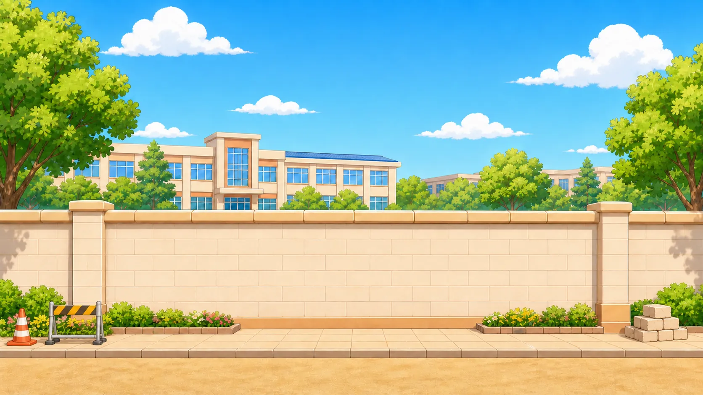
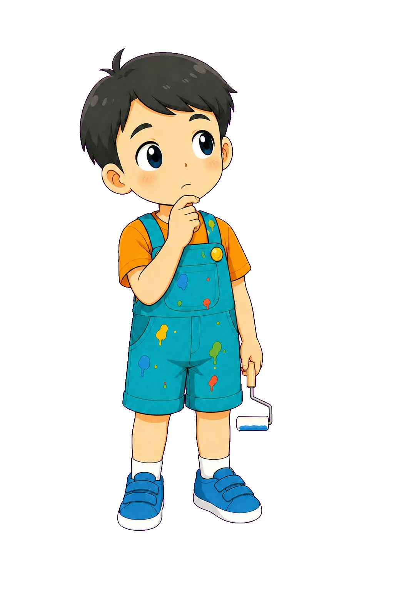

source/common/components
분리된 컴포넌트 예시
말풍선, CTA, scene controller, debug jumper를 한 화면에서 확인합니다.

좋아요! 이제 production 1-2/08에서 뽑은 컴포넌트를 따로 수정하고, 나중에 단일 HTML로 합칠 수 있어요.
키패드 컴포넌트
정답은 12입니다. 숫자를 누르고 확인해 보세요.

키패드 상태는 component JS가 만들고, 정답/오답 도장은 feedback-layer가 맡아요.